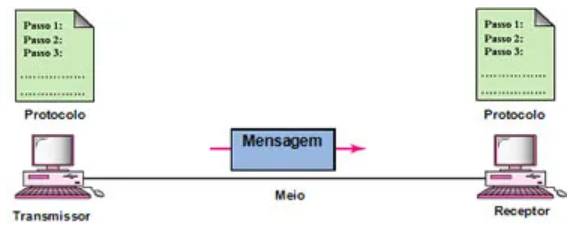
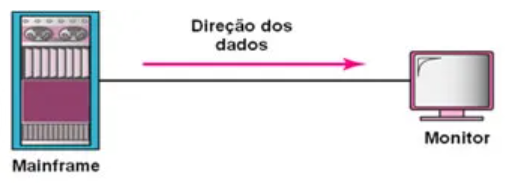
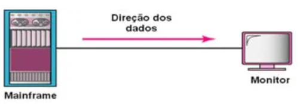
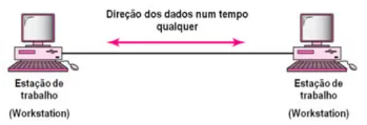
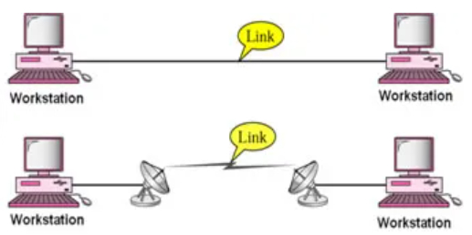
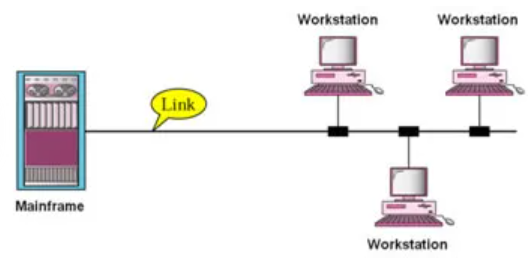

◉ Comunicação de Dados
O termo telecomunicações significa comunicação à
distância. A palavra dado refere-se à informação
apresentada entre partes que criam e usam dados.
Comunicação de dados é a troca de dados entre dois
dispositivos através de algum meio de transmissão, como
cabos formados por fios.
A eficiência de um sistema de comunicação de dados depende fundamentalmente de três características:
1. Entrega (delivery): o sistema deve entregar os dados ao destino correto. Os dados devem ser recebidos somente pelo
dispositivo ou usuário de destino.
2. Confiabilidade: o sistema deve garantir a entrega dos dados. Dados modificados ou corrompidos em uma transmissão são pouco úteis.
3. Tempo de atraso: o sistema deve entregar dados em um tempo finito e predeterminado. Dados entregues tardiamente são pouco úteis.
Por exemplo, no caso de transmissões multimídia, como vídeo, os atrasos não são desejáveis, de modo que eles devem ser entregues
praticamente no mesmo instante em que foram produzidos, isto é, sem atrasos significativos.
➤ Componentes
Um sistema básico de comunicação de dados é composto de cinco elementos
1. Mensagem: é a informação a ser transmitida. Pode ser constituída de texto, números, figuras, áudio e vídeo – ou qualquer combinação desses.
2. Transmissor: é o dispositivo que envia a mensagem de dados. Pode ser um computador, uma estação de trabalho, um telefone, uma câmera de vídeo e assim por diante.
3. Receptor: é o dispositivo que recebe a mensagem. Pode ser um computador, uma estação de trabalho, um telefone, uma câmera de vídeo e assim por diante.
4. Meio: é o caminho físico por onde viaja uma mensagem originada e dirigida ao receptor.
5. Protocolo: é um conjunto de regras que governa a comunicação de dados. Ele representa um acordo entre os dispositivos que se comunicam.

➤ Direção do fluxo de dados
Uma comunicação entre dois dispositivos pode acontecer de três maneiras diferentes: simplex, half-duplex ou full-duplex.
➤ Simplex
No modo simplex, a comunicação é unidirecional, como em uma rua de mão única. Somente um dos dois dispositivos no link é capaz
de transmitir; logo o outro só será capaz de receber.

➤ Half-duplex
Neste modo, cada estação pode transmitir e receber, mas nunca ao mesmo tempo. Quando um dispositivo está transmitindo o outro
está recebendo e vice-versa. Em uma transmissão half-duplex, toda a capacidade do canal é dada ao dispositivo que estiver
transmitindo no momento.

➤ Full-duplex
Neste modo, ambas estações podem transmitir e receber simultaneamente. Sinais em direções opostas compartilham a capacidade do
link ou canal.

➤ Tipos de conexão
Ponto-a-ponto
Proporcionado um link dedicado entre os dispositivos.

➤ Multi-ponto
É aquela na qual mais de dois dispositivos compartilham um único link:
